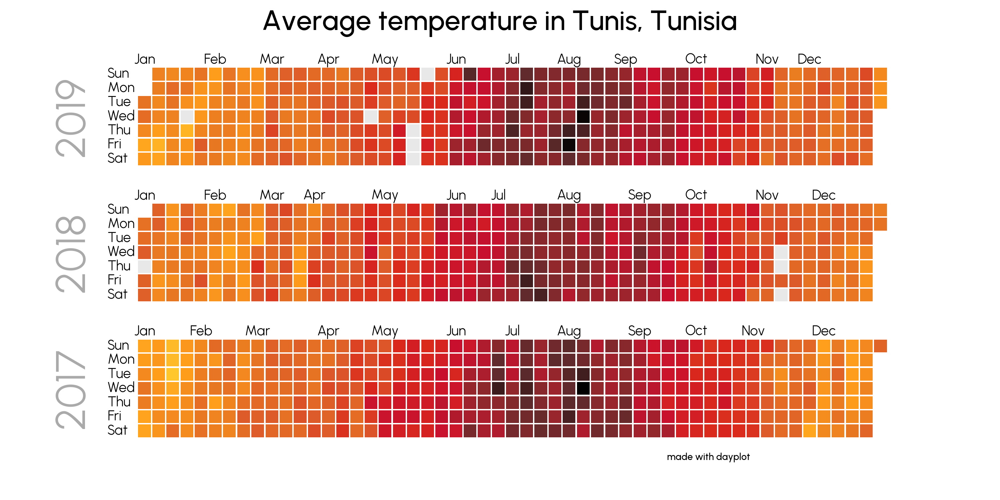
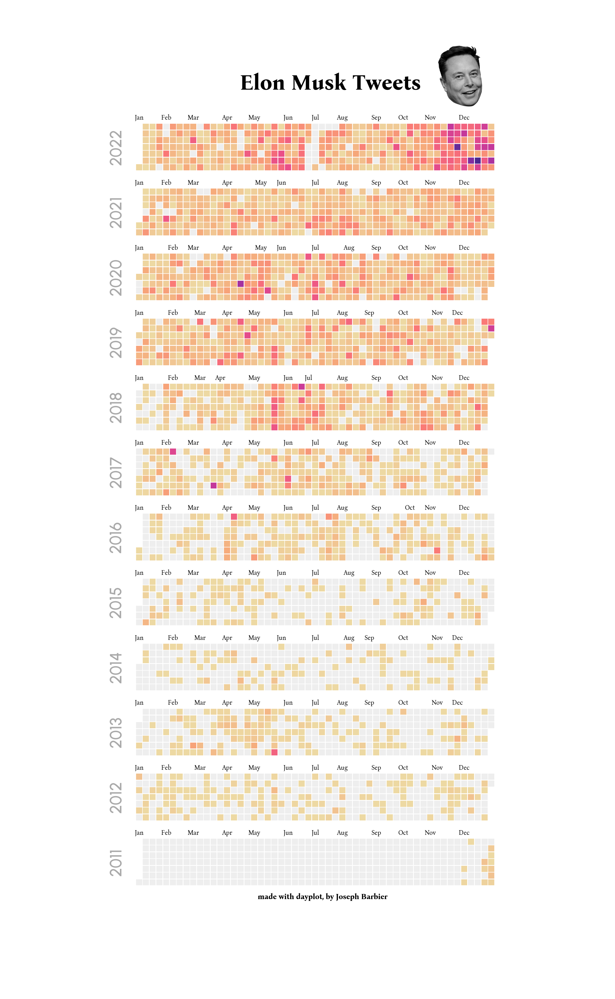
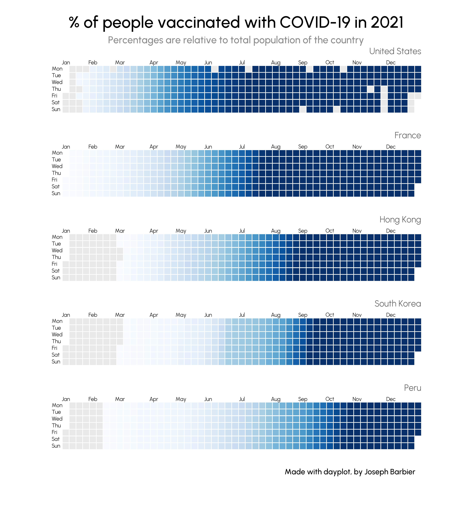

Advanced examples
Here's a list of cool uses for dayplot to demonstrate its capabilities. It regularly uses external libraries such as pyfonts or pypalettes.
Average temperature in Tunis
The dataset can be found here.
import pandas as pd
import matplotlib.pyplot as plt
from pypalettes import load_cmap
from pyfonts import load_font
import dayplot as dp
df = pd.read_csv("datasets/city_temperature.csv", low_memory=False)
df = df[df["City"] == "Tunis"]
df = df[df["Year"].isin([2017, 2018, 2019])]
df["Date"] = pd.to_datetime(df[["Year", "Month", "Day"]])
df = df[df["AvgTemperature"] != -99.0]
cmap = load_cmap("jazz_city", cmap_type="continuous", reverse=True)
font_url = "https://github.com/coreyhu/Urbanist/blob/main/fonts/ttf"
fontlight = load_font(f"{font_url}/Urbanist-Light.ttf?raw=true")
fontmedium = load_font(f"{font_url}/Urbanist-Medium.ttf?raw=true")
style_args = dict(
cmap=cmap,
day_kws={"font": fontlight},
month_kws={"font": fontlight},
day_x_margin=0.03,
month_y_margin=0.5,
)
fig, axs = plt.subplots(nrows=3, figsize=(15, 5))
dp.calendar(
df["Date"],
df["AvgTemperature"],
start_date="2019-01-01",
end_date="2019-12-31",
ax=axs[0],
**style_args,
)
dp.calendar(
df["Date"],
df["AvgTemperature"],
start_date="2018-01-01",
end_date="2018-12-31",
ax=axs[1],
**style_args,
)
dp.calendar(
df["Date"],
df["AvgTemperature"],
start_date="2017-01-01",
end_date="2017-12-31",
ax=axs[2],
**style_args,
)
fig.text(
x=0.5,
y=0.94,
s="Average temperature in Tunis, Tunisia",
size=20,
ha="center",
font=fontmedium,
)
fig.text(
x=0.75,
y=0.05,
s="made with dayplot",
size=7,
ha="right",
font=fontmedium,
)
text_args = dict(
x=-6, y=3.5, size=30, rotation=90, color="#aaa", va="center", font=fontlight
)
axs[0].text(s="2019", **text_args)
axs[1].text(s="2018", **text_args)
axs[2].text(s="2017", **text_args)

Elon Musk Tweets
The dataset can be found here and the image of Musk here.
{kind=link}
import pandas as pd
import matplotlib.pyplot as plt
import numpy as np
from PIL import Image
from pypalettes import load_cmap
from pyfonts import load_font
import dayplot as dp
df = pd.read_csv("datasets/elonmusk.csv")
df["Datetime"] = pd.to_datetime(df["Datetime"])
df["Date"] = df["Datetime"].dt.strftime("%Y-%m-%d")
df = df.groupby("Date").size().reset_index(name="n_tweets")
df = df[df["Date"] <= "2022-12-31"]
df = df[df["Date"] >= "2011-01-01"]
cmap = load_cmap("ag_Sunset", cmap_type="continuous", reverse=True)
font_url = "https://github.com/kosmynkab/Bona-Nova/blob/main/fonts/ttf"
fontlight = load_font(f"{font_url}/BonaNova-Regular.ttf?raw=true")
fontmedium = load_font(f"{font_url}/BonaNova-Bold.ttf?raw=true")
font_url = "https://github.com/coreyhu/Urbanist/blob/main/fonts/ttf"
fontyear = load_font(f"{font_url}/Urbanist-Medium.ttf?raw=true")
style_args = dict(
cmap=cmap,
day_kws={"alpha": 0},
month_kws={"font": fontlight, "size": 6},
month_y_margin=0.8,
color_for_none="#eeeeee",
)
text_args = dict(
x=-4, y=3.5, size=15, rotation=90, color="#aaa", va="center", font=fontyear
)
years = list(range(2011, 2023))[::-1]
fig, axs = plt.subplots(nrows=len(years), figsize=(15, 10))
for i, year in enumerate(years):
dp.calendar(
df["Date"],
df["n_tweets"],
start_date=f"{year}-01-01",
end_date=f"{year}-12-31",
ax=axs[i],
**style_args,
)
axs[i].text(s=f"{year}", **text_args)
fig.text(
x=0.39,
y=0.91,
s="Elon Musk Tweets",
size=20,
font=fontmedium,
)
fig.text(
x=0.63,
y=0.08,
s="made with dayplot, by Joseph Barbier",
size=7,
ha="right",
font=fontmedium,
)
elon_ax = axs[0].inset_axes([0.7, 1.1, 0.3, 1.4])
elon_ax.imshow(np.array(Image.open("docs/img/musk.png")))
elon_ax.axis("off")

COVID-19
The dataset can be found here.
import matplotlib.pyplot as plt
import dayplot as dp
import pandas as pd
from pyfonts import load_font
font_url = "https://github.com/coreyhu/Urbanist/blob/main/fonts/ttf"
fontlight = load_font(f"{font_url}/Urbanist-Light.ttf?raw=true")
fontmedium = load_font(f"{font_url}/Urbanist-Medium.ttf?raw=true")
df = pd.read_csv("datasets/country_vaccinations_by_manufacturer.csv")
df_agg = (
df.groupby(["date", "location"], as_index=False)["total_vaccinations"]
.sum()
.sort_values(["location", "date"])
)
fig, axs = plt.subplots(nrows=5, figsize=(12, 13))
fig.subplots_adjust(hspace=0.5)
text_style = dict(size=16, ha="right", x=0.99, y=1.15, color="#626262", font=fontlight)
calend_style = dict(
cmap="Blues",
start_date="2021-01-01",
end_date="2021-12-31",
week_starts_on="Monday",
vmin=0,
vmax=1,
month_kws={"font": fontlight},
day_kws={"font": fontlight},
)
france = df_agg[df_agg["location"] == "France"]
france["total_vaccinations"] = france["total_vaccinations"] / (67.8 * 1e6)
dp.calendar(
dates=france["date"],
values=france["total_vaccinations"],
ax=axs[1],
**calend_style,
)
axs[1].text(s="France", transform=axs[1].transAxes, **text_style)
south_korea = df_agg[df_agg["location"] == "South Korea"]
south_korea["total_vaccinations"] = south_korea["total_vaccinations"] / (51.8 * 1e6)
dp.calendar(
dates=south_korea["date"],
values=south_korea["total_vaccinations"],
ax=axs[3],
**calend_style,
)
axs[3].text(s="South Korea", transform=axs[3].transAxes, **text_style)
us = df_agg[df_agg["location"] == "United States"]
us["total_vaccinations"] = us["total_vaccinations"] / (331.9 * 1e6)
dp.calendar(
dates=us["date"],
values=us["total_vaccinations"],
ax=axs[0],
**calend_style,
)
axs[0].text(s="United States", transform=axs[0].transAxes, **text_style)
peru = df_agg[df_agg["location"] == "Peru"]
peru["total_vaccinations"] = peru["total_vaccinations"] / (33.2 * 1e6)
dp.calendar(
dates=peru["date"],
values=peru["total_vaccinations"],
ax=axs[4],
**calend_style,
)
axs[4].text(s="Peru", transform=axs[4].transAxes, **text_style)
hk = df_agg[df_agg["location"] == "Hong Kong"]
hk["total_vaccinations"] = hk["total_vaccinations"] / (7.4 * 1e6)
dp.calendar(
dates=hk["date"],
values=hk["total_vaccinations"],
ax=axs[2],
**calend_style,
)
axs[2].text(s="Hong Kong", transform=axs[2].transAxes, **text_style)
title_style = dict(
ha="center",
va="top",
font=fontmedium,
x=0.5,
)
fig.text(
y=0.97,
s="% of people vaccinated with COVID-19 in 2021",
size=30,
**title_style,
)
fig.text(
y=0.93,
s="Percentages are relative to total population of the country",
size=18,
color="#8d8d8d",
**title_style,
)
fig.text(
x=0.88,
y=0.07,
s="Made with dayplot, by Joseph Barbier",
font=fontmedium,
ha="right",
size=14,
)
